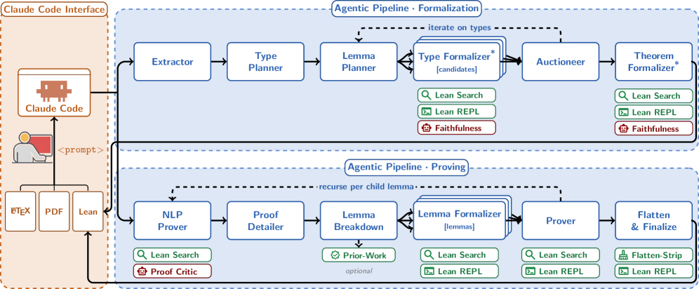
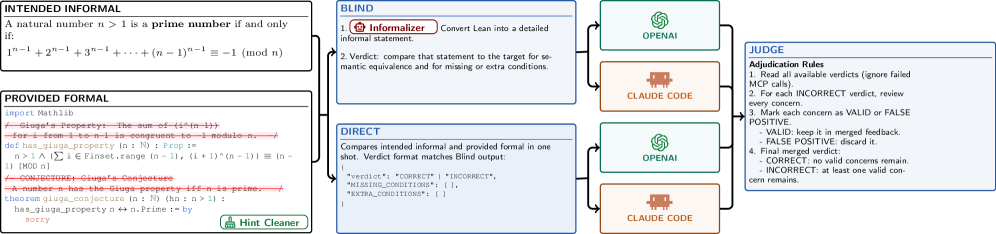
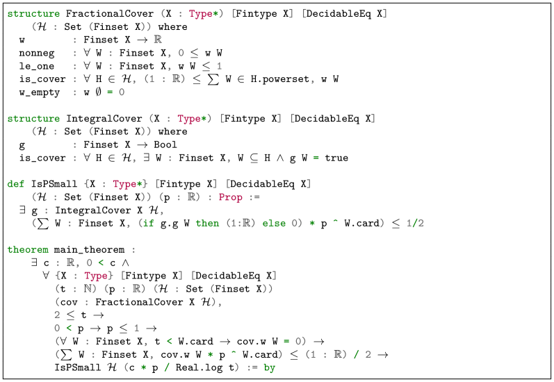

An agentic multi-agent framework autoformalizes research mathematics into Lean 4, extending type definitions beyond Mathlib and validating via auxiliary lemmas.
Abstract
While Large Language Models (LLMs) have demonstrated exceptional capabilities in mathematical reasoning, they frequently produce subtle errors that evade human detection. Formal mathematical languages like Lean 4 offer mechanical proof checking, strongly motivating the need for autoformalization: the automatic translation of natural language mathematics into verifiable code. Recent trends indicate that general-purpose LLMs, heavily optimized for standard programming, now outperform smaller models explicitly fine-tuned for Lean. Leveraging this shift, we introduce an agentic autoformalization framework powered by general coding LLMs. At the core of our system is an orchestrator that manages a multi-agent pipeline tailored for research-level mathematics. Because cutting-edge research frequently relies on concepts outside the scope of existing libraries like Mathlib, our system dynamically extends necessary type definitions and validates them via a novel Auxiliary Lemma technique before formalizing the primary theorems. We applied our approach to PutnamBench, producing machine-checked Lean proofs for a random sample of 32 problems. Furthermore, we evaluate our system on five papers from the ACM Symposium on Theory of Computing (STOC) spanning combinatorics, communication complexity, mechanism design, and learning theory, successfully formalizing their main theorems and validating the generated formalizations with human experts; for all five we also formalize the proofs alongside the statements, and notably two of them are proved with no axioms beyond Lean's kernel. All of our formalizations are available at https://beyondthelibrary.github.io/formal_arxiv .
Problem
LLM-generated mathematical proofs contain subtle errors that are hard to verify manually. Autoformalization into Lean enables mechanical checking, but research-level mathematics relies on concepts absent from existing libraries like Mathlib.
Approach
An orchestrator (a Claude Code session) manages two pipelines: one formalizing theorem statements and one formalizing proofs. It uses a type-first decomposition, dynamically planning and creating type definitions not in Mathlib, validating them through an Auxiliary Lemma unit-testing technique. A Faithfulness Judge verifies formalizations by checking Lean code and informalizing it back to natural language.

Figure 1 : Overview of our agentic system. The user interacts through the Claude Code interface (left), providing the paper in L a T e X and PDF form together with a prompt, and the system returns Lean code. The orchestrator drives two pipelines. The Formalization pipeline (top, Section 2.1 ) extracts the main theorem, then iterates over the required types, planning and formalizing each type toget

Figure 3 : Faithfulness Judge: As illustrated, when provided with an informal statement and its corresponding formalization, this agent verifies the input using two methods. First, it checks the Lean code directly. Second, it utilizes an “informalizer” to translate the Lean code back into natural language to confirm they match. Because a single model like Claude may struggle with self-evaluation,
Results
The system solved all 32 sampled PutnamBench problems (lower-bound 91.3% at 95% confidence) at under $5 per problem via a $200 Claude subscription. It formalized main theorems of five STOC papers, validated by human experts, with two proofs relying on no axioms beyond Lean's kernel.

Figure 4 : Lean formalization of the headline theorem of Pham [ 17 ] : the FractionalCover and IntegralCover structures, the IsPSmall predicate (the cover cost c_{{\mathrm{int}}} ), and the statement of main_theorem .
Paper
Area
Axioms beyond kernel
Mackenzie and Saffidine
Communication complexity
None
Gravin and Jia
Mechanism design
None
Pham
Combinatorics
1
Rivkin et al.
Information-theoretic LB
2
Kalai et al.
Learning theory
3
Axioms beyond Lean kernel for formalized STOC papers